¶ Задание
1. Настройте контроллер домена Samba DC на сервере BR-SRV:
− Имя домена au-team.irpo
− Введите в созданный домен машину HQ-CLI
− Создайте 5 пользователей для офиса HQ: имена пользователей формата hquser№ (например hquser1, hquser2 и т.д.)
− Создайте группу hq, введите в группу созданных пользователей
− Убедитесь, что пользователи группы hq имеют право аутентифицироваться на HQ-CLI
− Пользователи группы hq должны иметь возможность повышать привилегии для выполнения ограниченного набора команд: cat, grep, id. Запускать другие команды с повышенными привилегиями пользователи группы права не имеют.
¶ Реализация
Имеем установленный и настроенный DNS сервер на HQ-SRV. Настройки аналогичны Модуль–1, Задание–10.
Виртуальная машина HQ-SRV
¶ Дополнительная настройка Bind на HQ-SRV
На HQ-SRV открываем конфигурационный файл DNS сервера /etc/named.conf
и дописываем строчку
где:
Allow-transfer — директива в DNS-сервере BIND, которая указывает список серверов, которым разрешено брать зону с сервера. Обычно в этом параметре указывают вторичные (slave) серверы
192.168.4.2 - IP адрес BR-SRV
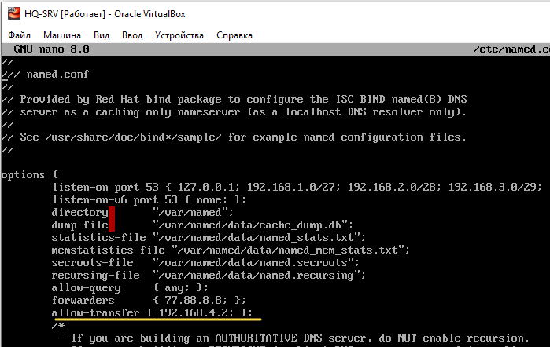
Перезагружаем службу named
¶ Установка сервера SAMBA DC на BR-SRV
Виртуальная машина BR-SRV
Вносим изменения в политики SELinux на BR-SRV
Переводим selinux в режим уведомлений. Для этого изменяем содержимое конфигурационного файла:
Заменяем текст SELINUX=enforcing на SELINUX=permissive.
Затем выполняем
Устанавливаем Samba и Kerberos
Вносим изменения в настройки сетевого интерфейса BR-SRV в конфигурации IPv4
- IP-адрес первого DNS-сервера – IP-адрес HQ-SRV
- IP-адрес второго DNS-сервера – IP-адрес создаваемого контроллера домена (BR-SRV)
- Указываем Домен поиска – au-team.irpo
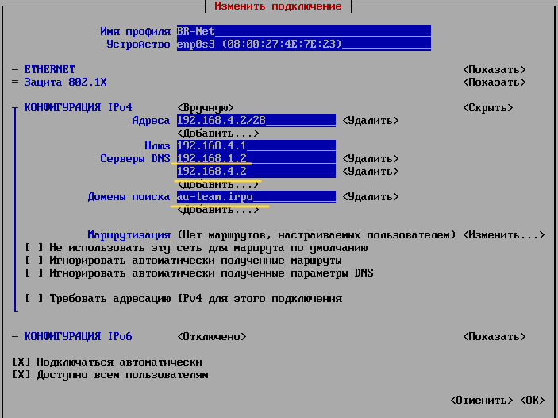
Для удобства и сокращения времени выполнения данного задания рекомендуется подключиться с
HQ-CLIкBR-SRVпоSSH. И произвести выполнения задания согласно Базе Знаний РЕД ОС (используем ctrl+c ctrl+v)
Отключаем DNS-службы systemd-resolved в файле /etc/systemd/resolved.conf
Чтобы избежать конфликтов systemd-resolved с Samba DNS, нужно отключить DNSStubListener
Устанавливаем параметр DNSStubListener в значение no, отключив прослушивание systemd-resolved на порту 53.
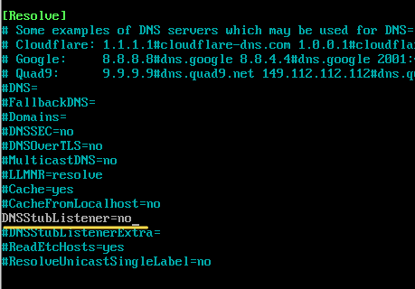
Перезапускаем systemd-resolved и NetworkManager
Проверяем изменения в настройках
В выводе должен быть указан адрес, отличающийся от 127.0.0.53 и Домен поиска (search)
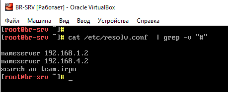
¶ Создание домена под управлением Samba DC
Переименовываем файл /etc/samba/smb.conf, он будет создан в процессе выполнения команды samba-tool
Данный файла при запуске полуавтоматической конфигурации может вызвать ошибку.
Создаем резервную копию конфигурационного файла kerberos, используемого по умолчанию
Настраиваем конфигурацию Kerberos /etc/krb5.conf*
Данный файл приводим к следующему виду
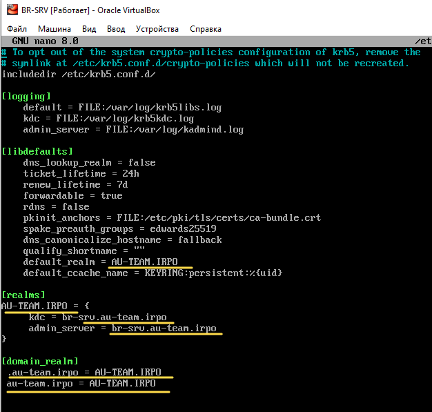
Открываем файл /etc/krb5.conf.d/crypto-policies
и приводим его содержание к следующему виду: Можно скопировать с Базы Знаний РЕД ОС
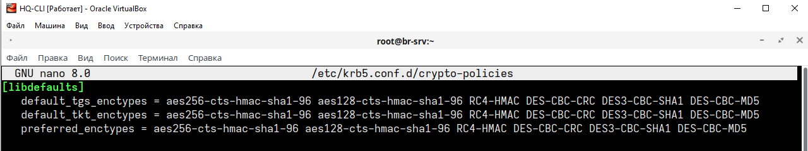
Можно оставить файл без изменений, работает (в рамках Демо экзамена)
Запускаем полуавтоматическое конфигурирование сервера с помощью утилиты samba-tool
Конфигурирование в интерактивном режиме выполняется командой:
Проверяем, если автоматически подставленные значения
верные, жмемEnterи вводим пароль Администратора.
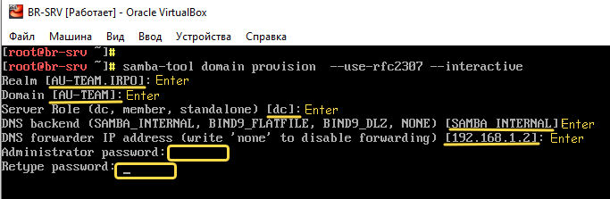
Запускаем и добавляем в автозагрузку службу samba
Проверка статуса службы
Проверяем работу домена
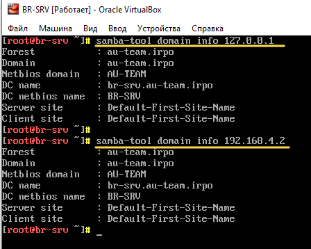
¶ Добавление пользователей
Создаем 5 пользователей
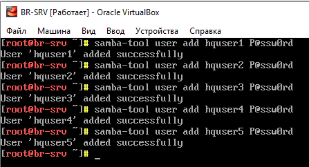
Создаем группу hq и добавляем туда созданных пользователей
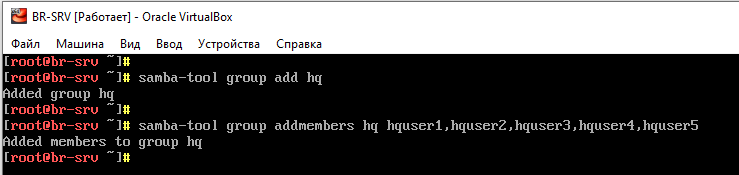
Вывод списка пользователей Samba DC
Вывод пользователей группы
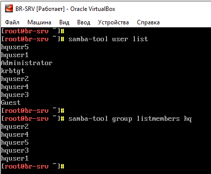
¶ Ввод клиента HQ-CLI в домен
Виртуальная машина HQ-CLI
В настройке сетевого интерфейса HQ-CLI (VLAN200) добавляем Дополнительные серверы DNS – прописав IP адрес BR-SRV
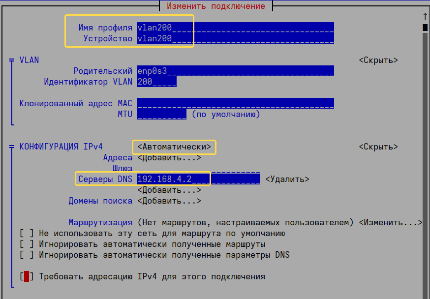
В терминале HQ-CLI запускаем скрипт join-to-domain.sh с привилегиями суперпользователя
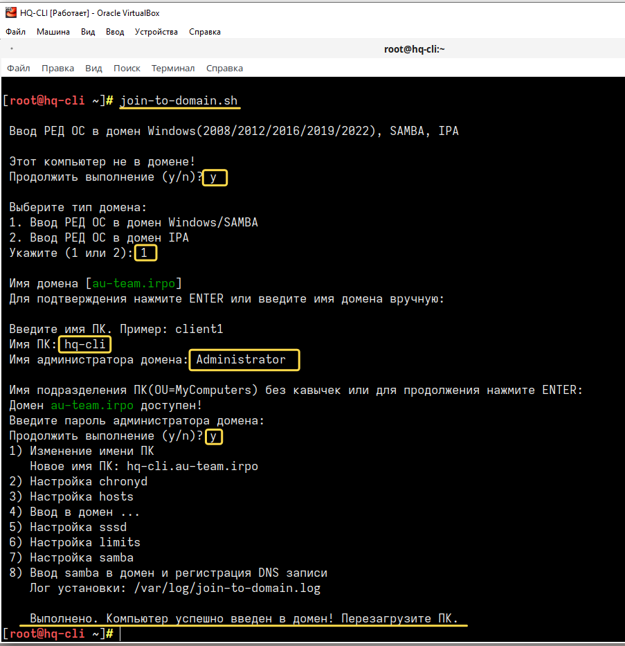
Вводим пароль, который вводили при настройке домена через samba-tool
Перезагружаем HQ-CLI и входим под доменным пользователем
¶ Привилегии для выполнения набора команд
Виртуальная машина HQ-CLI
Вариант 1
Создаем файл /etc/sudoers.d/hq на HQ-CLI
В данном файле создаем записи прав sudo для пользователей группы hq:
Повышение привилегий с вводом пароля
Повышения привилегий без ввода пароля
где
/usr/bin/cat, /usr/bin/grep, /usr/bin/id - полный путь к запускаемым командам
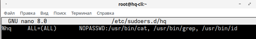
Вариант 2
Настройка пользователей группы hq повышать привилегии для выполнения ограниченного набора команд производится добавление записи для прав sudo в файле /etc/sudoers:
Вносим в конфигурационный файл следующие строки.
Повышение привилегий с вводом пароля:
Повышения привилегий без ввода пароля:
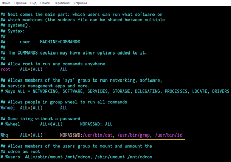
Нахождение полного пути к команде
Which в Linux — это утилита для нахождения местоположения исполняемых файлов. Она анализирует пути, указанные в переменной окружения PATH, и возвращает путь к первому найденному файлу, соответствующему запрошенному имени.
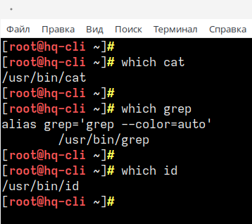
Виртуальная машина BR-SRV
Проверка (опционально)
На BR-SRV выполняем
Пример получения списка имен (SAM) компьютеров:
Пример получения списка уникальных составных имен компьютеров (DN):
Получение полного списка учетных записей в домене
Пример получения списка уникальных составных имен пользователей (DN):